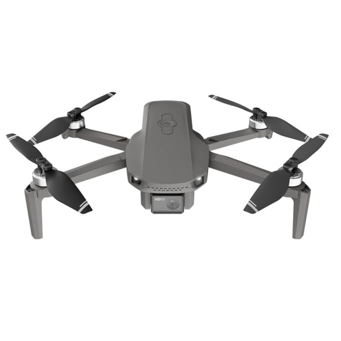
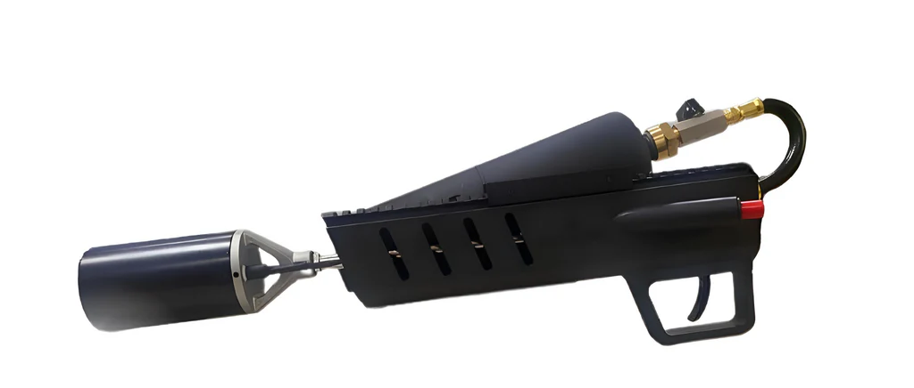
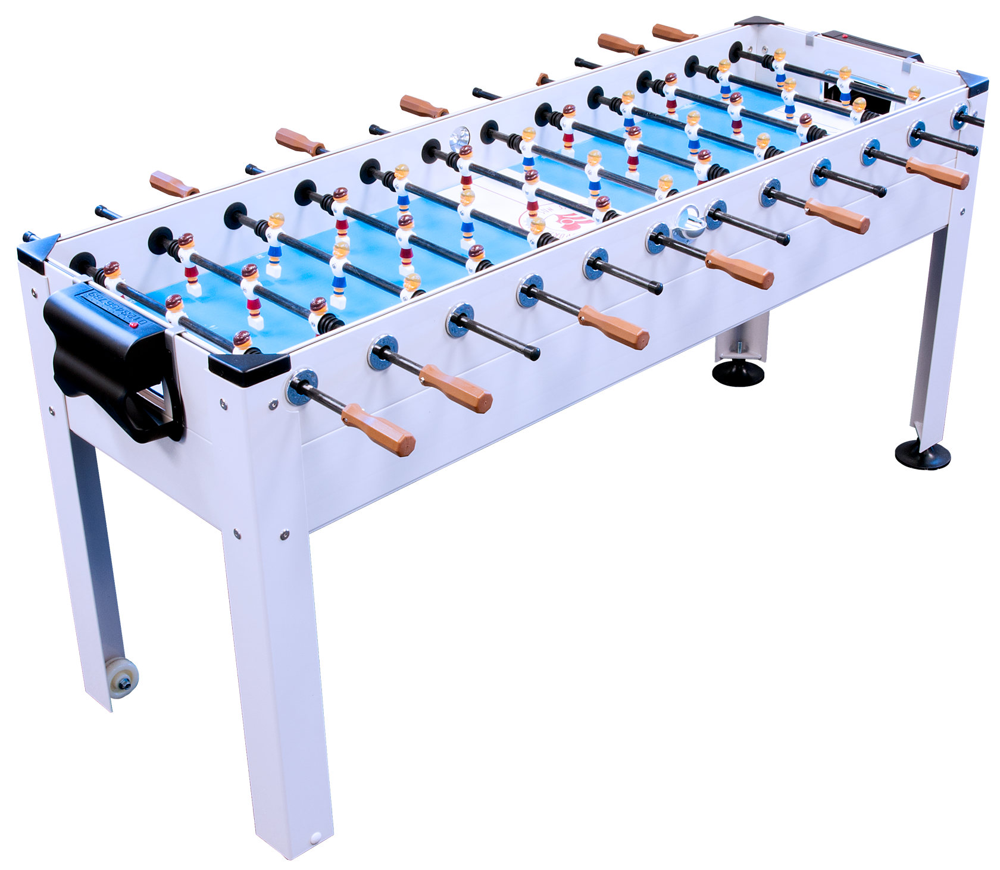

<div class="textcontainer">
<br></br>
<h3>Week 1: Final Project Proposal</h3>
<p class = "margin"></p>
Here are at most 3 ideas for my final project
<p class = "margin"></p>
<h4>Idea 1 : High-Performance VFS Competition Drone</h4>
<p class = "margin"></p>

<p class = "margin"></p>
This project involves designing and fabricating a custom drone optimized for the Vertical Flight Society (VFS) competition specifications. The focus will be on creating a lightweight, aerodynamic frame using Fusion 360, then manufacturing it via 3D printing or carbon fiber machining.
<p class = "margin"></p>
<h4>Idea 2: Controlled Handheld Flame Apparatus (Camping Tool)</h4>
<p class = "margin"></p>

<p class = "margin"></p>
I'd like to design a handheld propane-based flame device for controlled heat application (ie, on a camping trip) or theatrical effects. The system will feature a custom-designed nozzle, an electronic ignition system, and a dead-man's switch.
<p class = "margin"></p>
<h4>Idea 3: 6-Player Foosball Table</h4>
<p class = "margin"></p>

<p class = "margin"></p>
My favorite pasttime at Harvard is foosball with my suite. However, my suite is 6 people. So this project aims to engineer an extended-length foosball table designed to accommodate two teams of three players. The project will involve woodworking for the table body, CNC machining for the extended control rods to prevent bending under torque, and 3D printing custom player figures.
</div>